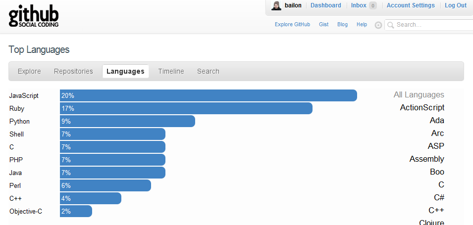
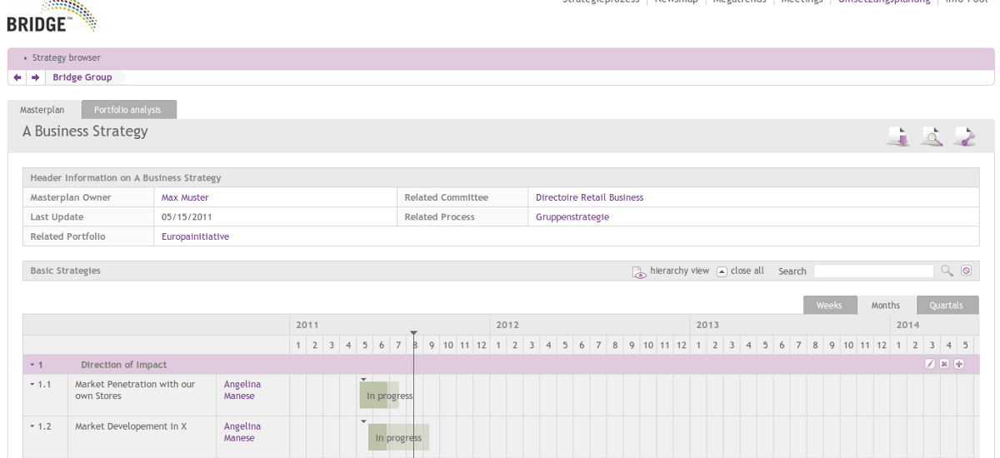

Javascript
A Linguagem do Futuro
Javascript?
- Criada em 1995 pela Netscape
- Roda em qualquer navegador
- Independente de plataforma
- Processamento no cliente
- Fácil aprendizado
- Tipagem fraca
- Descoberta recente do poder da linguagem
Por que?

O poder está com você
- jQuery - Write less, do more (propósito geral)
- script.aculo.us - it's about the user interface, baby! (efeitos interface)
- YUI - Yahoo User Interface Library (testes e desempenho)
- prototype - javascript library
- dojo toolkit - mobile, interfaces ricas alem de tabelas e gráficos
Vida além do DOM
- emscripten - LLVM-to-JavaScript compiler
- gordon - An open source Flash™ runtime
- ProcessingJS - Visualização de dados, animações, etc.
- Coffee Script - Linguagem simplificada que compila JS
- Node - Server-side javascript
- CommonJS - Bibliotecas para extender o poder da linguagem
Estudo de Caso - Bridge
100k
linhas de javascript puro
Bridge

Valeu gurizada!